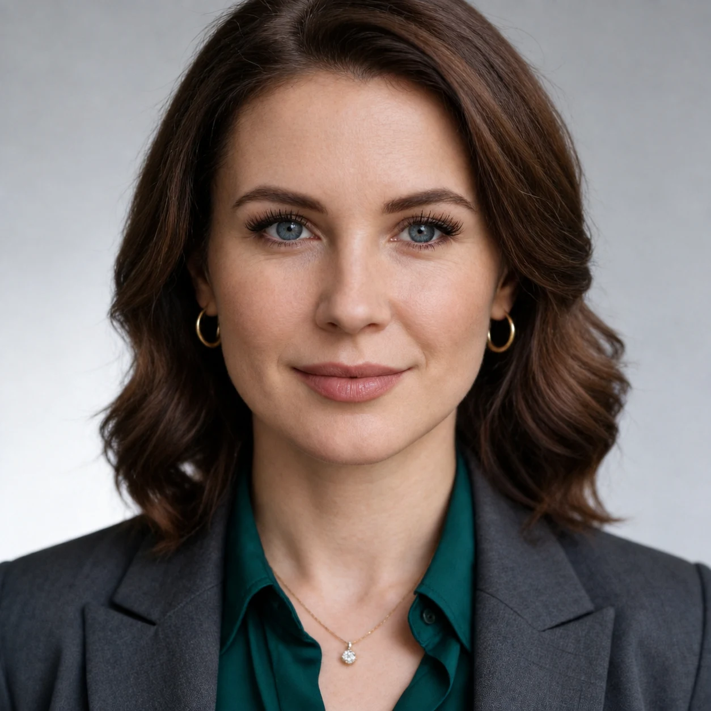

Стратегический разбор
Для конкретного вопроса или ситуации, в которой нужен взгляд со стороны. Разбираем проблему, определяем возможные причины, формируем гипотезы и выбираем, что делать дальше.
от 20 000 ₽
Стратег-Навигатор по развитию экспертных проектов
Анализирую аудиторию, продукт, позиционирование и маркетинг, чтобы найти причину проблемы и определить, что менять в первую очередь.
Для зрелых экспертных проектов и предпринимателей с личным брендом.

У проекта есть продукт, аудитория, контент и продажи. Команда работает. Продвижение продолжается. Но:
В такой ситуации я не начинаю с вопроса:
«Что ещё запустить?»
Сначала нужно понять:
Что изменилось — и почему.
Я смотрю на проект как на систему и соединяю то, что часто анализируют отдельно:
аудитория → продукт → рынок → конкуренты → позиционирование → коммуникации → история проекта
Ищу точки, где система перестала совпадать сама с собой.
Что уже говорят аудитория, рынок, цифры, отзывы, продажи и поведение клиентов.
Что является настоящей причиной проблемы, а что — только её симптомом.
Что сохранить, что изменить, от чего отказаться и что проверить первым.
Результат — не ещё один список маркетинговых идей, а ясность:
Основной формат работы
Когда прежняя модель перестала давать прежний результат, важно не добавлять ещё один инструмент, а понять, что именно изменилось и где искать причину.
от 45 000 ₽
Обсудить диагностикуВ результате вы получаете:
ясную картину ситуации + ключевые причины + карту изменений
Становится понятно:
что сохранить → что изменить → что усилить → что проверить → что делать первым.
Для конкретного вопроса или ситуации, в которой нужен взгляд со стороны. Разбираем проблему, определяем возможные причины, формируем гипотезы и выбираем, что делать дальше.
от 20 000 ₽
Когда изменился рынок, аудитория или сам эксперт, а прежнее позиционирование больше не помогает проекту развиваться. Определяем, в чём ценность проекта сегодня, для кого она важна, какое место занять на рынке и на каких смыслах строить дальнейшее развитие.
от 90 000 ₽
Внешний стратег проекта на этапе изменений. Помогаю сохранять выбранный курс, оценивать решения команды, анализировать результаты и реакцию аудитории, проверять гипотезы и корректировать стратегию по мере появления новых данных.
от 120 000 ₽ / месяц
Кейс
Клиент хотел повысить стоимость продукта и перейти в премиальный сегмент. После повышения цены продажи начали снижаться.
Заявленное премиальное позиционирование не соответствовало самому продукту и тому, за что его ценила аудитория.
Снизили цену и сделали акцент на реальных сильных сторонах продукта — доступности, близости и дружелюбии.
Результат: продажи выросли.
Иногда бизнесу не нужен более сильный маркетинг. Иногда нужно точнее попасть в рынок — продуктом, ценой и позиционированием.

Мой профессиональный взгляд сформировался на пересечении:
экономики+ маркетинга+ коммуникаций+ психологии+ стратегического анализа+ AI
Высшее экономическое образование дало мне привычку видеть системы, закономерности и причинно-следственные связи.
Работа в маркетинге и онлайн-проектах — слышать аудиторию, анализировать её реакцию и понимать, как решения бизнеса воспринимаются людьми.
Психология помогает смотреть глубже цифр: на мотивацию, доверие, ожидания и принятие решений.
AI позволяет быстрее исследовать большие объёмы информации и проверять гипотезы.
Но моя главная работа — не собрать больше данных. А понять, что они означают для бизнеса.
Маркетинг не должен заставлять людей хотеть ваш продукт
Я верю, что хороший маркетинг помогает качественному продукту встретиться с людьми, которым он действительно нужен.
Поэтому иногда стратегическое решение — усилить продвижение.
А иногда — изменить продукт, цену, коммуникацию или позиционирование.
Рынок не обязан подстраиваться под прежнюю стратегию бизнеса.
Но бизнес может заметить, что изменилось, — и выбрать новый маршрут.
Расскажите, что перестало работать, какие изменения вы замечаете и что хотите понять.
Разберём вашу ситуацию и определим, какой формат работы подойдёт.
Обсудить проектНапишите в двух-трёх предложениях, что происходит с проектом и какой вопрос сейчас волнует больше всего.
ВКонтакте · vk.me/vedoveste